Javascript en el servidor: Node.js

Introducción
Node.js (o simplemente Node) es un entorno de ejecución que permite ejecutar programas Javascript.
Principalmente dirigido a servidores web, pero puede utilizarse para implementar cualquier tipo de aplicación.
En este curso utilizaremos Node para implementar la funcionalidad del lado del servidor en las aplicaciones web.
Se distribuye bajo una licencia MIT.
Versiones
- v4.6.1 LTS, que utilizaremos en este curso.
- v6.9.1 LTS, que pasó a ser LTS en octubre de 2016.
LTS = Long Term Support
Las versiones LTS tienen suporte garantizado durante 18 meses a partir del momento en el que se convierten en LTS.
Las versiones 6.x.x rompen la compatibilidad con las 4.x.x. Algunos programas escritos en Node 4 pueden requerir modificaciones para ejecutarse bajo Node 6.
Instalación
Puede descargarse desde:
https://nodejs.org/en/download/
En las versiones para Windows y Mac incluye un instalador.
Desde GNU/Linux se puede:
- Descargar los binarios desde la página anterior.
- Utilizar el gestor de paquetes de la distribución.
- Utilizar nvm (http://nvm.sh), que permite mantener varias versiones de Node en un mismo sistema.
Ejecución de un script
Basta con teclear:
# node nombre_script.js
Si se desea ejecutar el intérprete (REPL):
# node
REPL = Read-Eval-Print Loop
El intérprete permite evaluar las expresiones Node que se introduzcan por teclado.
Ejemplo de sesión con el intérprete
# node
> 5 + 6
11
> var x = 4 + 5
undefined
> console.log("Hola");
Hola
undefined
> x
9
> function suma(x,y) {
..... return x + y;
..... }
undefined
> suma(4, 5)
9
> .exit
Comandos del intérprete
-
.exit
Sale del intérprete. -
.load script.js
Ejecuta las sentencias del fichero dado. -
.save script.js
Guarda todas las expresiones evaluadas en un fichero. -
.break
Cancelar introducción de expresión actual. Útil cuando se queda algún paréntesis abierto en la entrada.
Proyectos Node
La gestión de proyectos de cierta envergadura utilizando el ejecutable node resulta algo tediosa, porque involucra:
- Gestión de dependencias (librerías externas).
- Arranque y parada del sistema.
- etc.
Podemos gestionar los proyectos:
- Desde la línea de comandos:
npm. - Desde un IDE: Netbeans.
NPM (Node Package Manager)
Es una herramienta que se incluye con la distribución de Node. Permite:
- Crear proyectos vacíos.
- Gestionar las librerías de las que hace uso un proyecto, bajándoselas desde un repositorio oficial (NPM Registry).
- Gestionar scripts: arranque del sistema, parada, ejecución de tests, etc.
Más información: https://www.npmjs.com/
Creación de un proyecto con npm:
Ejecutar desde la línea de comandos:
# npm init
Se solicitará información sobre los datos del proyecto:
...
name: (project-test) miproyecto
version: (1.0.0) ↲ (Pulsar intro)
description: Esto es un proyecto de prueba
entry point: (index.js) app.js
test command: ↲
git repository: ↲
keywords: node proyecto aw prueba
author: Manuel Montenegro
license: (ISC) MIT
About to write to /home/manuel/Docencia/AW/Pruebas/project-test
/package.json:
...
Is this ok? (yes) yes
Se creará un fichero package.json con el siguiente contenido:
{
"name": "miproyecto",
"version": "1.0.0",
"description": "Esto es un proyecto de prueba",
"main": "app.js",
"scripts": {
"test": "echo \"Error: no test specified\" && exit 1"
},
"keywords": [
"node",
"proyecto",
"aw",
"prueba"
],
"author": "Manuel Montenegro",
"license": "MIT"
}
-
Atributo
scripts: permite añadir comandos para arrancar el programa, detenerlo, etc.
Por ejemplo, podemos añadir:
para poder arrancar el sistema mediante... "scripts": { "test": "echo \"Error: no test specified\" && exit 1", "start": "node app.js" }, ...# npm start
Si no se introduce un nombre para repositorio Git, es posible declarar el paquete como privado, mediante la opción private:
{
...
"author": "Manuel Montenegro",
"license": "MIT",
"private": true
}
De este modo evitaremos warnings sobre la ausencia de un repositorio.
Uso de Netbeans
Netbeans dispone un plugin para Node.
Se requiere Netbeans 8.1 o posterior.
Al descargarlo de la página web https://netbeans.org es necesario seleccionar la versión HTML5/Javascript o All.
Configuración de Netbeans
Antes de utilizar el plugin de Netbeans es necesario indicar el directorio en el que se encuentran los ejecutables de Node: node, npm, etc.
Menú Tools → Options → Pestaña HTML/JS → Pestaña Node
Crear un proyecto en Netbeans
File → New Project...
Seleccionar categoría HTML5/Javascript y tipo de aplicación Node.js application.
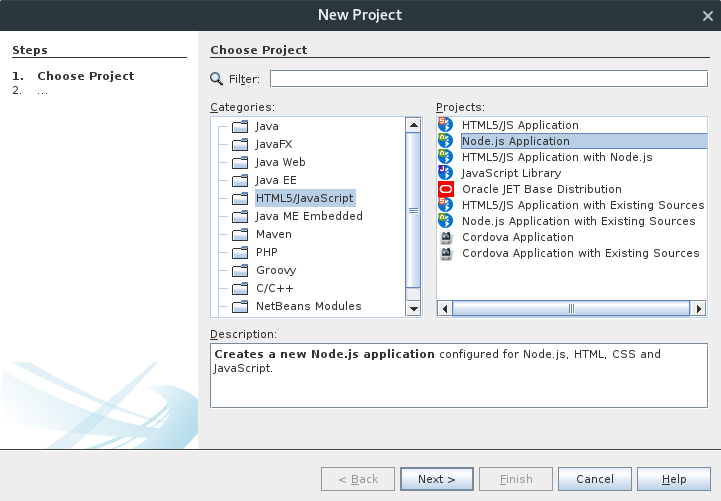Especificar nombre de proyecto y pulsar Next >
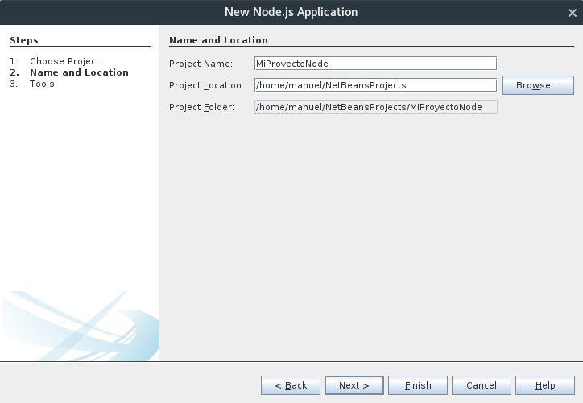Aceptar opciones por defecto y pulsar Finish
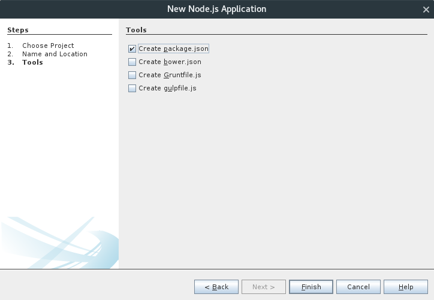Módulos en Node
Además de poder dividir el código en fragmentos, favorecen la reutilización de código.
Un buen sistema de módulos debe proporcionar:
- Algún mecanismo para evitar conflictos de nombres entre distintos módulos.
Ejemplo: Espacios de nombres (C++), paquetes (Java), etc.
-
Mecanismos para separar interfaz de implementación.
Ejemplo: listas de funciones exportadas (Haskell), privacidad de atributos (Java, C++, etc).
Tipos de módulos
- Módulos basados en ficheros.
Están contenidos en un único fichero. Se importan por separado en el proyecto. - Módulos core.
Vienen incluidos con Node. Proporcionan operaciones básicas (ficheros, servidores web, sistema operativo). - Módulos de tipo paquete.
Librerías externas, gestionadas por npm.
Crear un módulo de fichero con una única función
Se crea un fichero Javascript con la función a definir y ésta se asigna a la variable module.exports:
function fibAux(n) {
if (n === 0) {
return 0;
} else if (n === 1) {
return 1;
} else {
return fib(n-1) + fib(n-2);
}
}
function fib(n) {
console.assert(typeof(n) === "number", `${n} is not a number`);
return fibAux(n);
}
module.exports = fib;
Suponemos que el código anterior está contenido en un fichero moduloFib.hs.
Ahora hacemos uso de la función fib desde otro fichero:
// testModules.js
// --------------
var fib = require("./moduloFib.js");
console.log(fib(10));
Imprime:
55
La función require:
- Ejecuta el script contenido en el fichero pasado como parámetro.
- Devuelve el objeto asignado a
module.exports(en este caso, la funciónfib)
El objeto devuelto por require se guarda en una variable que no tiene por qué ser igual que el nombre de la función exportada.
var myFib = require("./moduloFib.js");
console.log(myFib(10));
Esto es útil para prevenir conflictos de nombres entre los distintos módulos. Supongamos otro módulo otroModuloFib.hs que también exporta una función fib:
var myFib = require("./moduloFib.js");
var otroFib = require("./otroModuloFib.js");
console.log(myFib(10));
console.log(otroFib(10));
Exportar más de una función
Hasta ahora hemos asignado una función a la variable module.exports.
Pero puede asignarse cualquier otro tipo de valor: enteros, arrays, objetos, etc.
Lo más frecuente es querer exportar varias funciones en un módulo. Para ello se exporta un único objeto que contenga todas las funciones.
Ejemplo: geometria.js
function areaCuadrado(lado) {
return lado * lado;
}
function areaCirculo(radio) {
return Math.PI * radio * radio;
}
function perimetroCuadrado(lado) {
return 4 * lado;
}
function perimetroCirculo(radio) {
return 2 * Math.PI * radio;
}
module.exports = {
areaCuadrado: areaCuadrado,
areaCirculo: areaCirculo,
perimetroCuadrado: perimetroCuadrado,
perimetroCirculo: perimetroCirculo
}
...
module.exports = {
areaCuadrado: areaCuadrado,
areaCirculo: areaCirculo,
perimetroCuadrado: perimetroCuadrado,
perimetroCirculo: perimetroCirculo
}
El objeto exportado contiene cuatro atributos, cada uno asociado a su función correspondiente.
Los nombres de estos atributos serán los que se utilicen cuando se haga uso de este módulo.
Ejemplo de uso:
var geometria = require("./geometria.js");
console.log(geometria.areaCuadrado(10));
console.log(geometria.areaCirculo(10));
De nuevo, el nombre de la variable devuelta por el require puede ser cualquiera:
var g = require("./geometria.js");
console.log(g.areaCuadrado(10));
console.log(g.areaCirculo(10));
Aunque por convenio suele utilizarse el mismo nombre para la variable y el módulo (es decir, geometria)
Otra posible forma de definir un módulo: definir las funciones en el objeto asignado a module.exports.
module.exports = {
areaCuadrado: function(lado) {
return lado * lado;
},
areaCirculo: function(radio) {
return Math.PI * radio * radio;
},
perimetroCuadrado: function(lado) {
return 4 * lado;
},
perimetroCirculo: function(radio) {
return 2 * Math.PI * radio;
}
}
Otra forma más:
module.exports.areaCuadrado = function(lado) {
return lado * lado;
};
module.exports.areaCirculo = function(radio) {
return Math.PI * radio * radio;
};
module.exports.perimetroCuadrado = function(lado) {
return 4 * lado;
};
module.exports.perimetroCirculo = function(radio) {
return 2 * Math.PI * radio;
};
Lo que no se exporte dentro de un módulo se considera privado al mismo. Esto nos permite modificar la implementación sin alterar la interfaz.
// moduloFib.js
// ------------
var PHI = (1 + Math.sqrt(5)) / 2;
// Cambio la función fibAux por esta:
function fibMasEficiente(n) {
var p1 = Math.pow(PHI, n);
var p2 = Math.pow(1 - PHI, n);
return Math.round((p1 - p2) / Math.sqrt(5));
}
function fib(n) {
console.assert(typeof(n) === "number",
`fib: ${n} is not a number`);
return fibMasEficiente(n);
}
module.exports = fib;
Importante
A la hora de importar un módulo de tipo fichero mediante require, es necesario indicar el path del fichero que se importa, aunque se encuentre en el mismo directorio.
// Correcto:
var geometria = require("./geometria.js");
// Correcto:
var geometria = require("./aw/librerias/geometria.js");
// Correcto:
var geometria = require("../geometria.js");
// Incorrecto:
var geometria = require("geometria.js");
No obstante, puede omitirse la extensión .js
// Correcto:
var geometria = require("./geometria");
// Incorrecto:
var geometria = require("geometria.js");
Si no se especifica un path, Node entiende que se quiere importar un módulo de otro tipo:
- Módulo core.
- Módulo de tipo paquete.
Sentencias en un módulo
Además de declaraciones de funciones, un módulo puede contener cualquier tipo de sentencia. Estas sentencias serán ejecutadas al cargar el módulo.
console.log("Cargando módulo " + module.filename);
function areaCuadrado(lado) { ... }
function areaCirculo(radio) { ... }
function perimetroCuadrado(lado) { ... }
function perimetroCirculo(radio) { ... }
module.exports = {
areaCuadrado: areaCuadrado,
areaCirculo: areaCirculo,
perimetroCuadrado: perimetroCuadrado,
perimetroCirculo: perimetroCirculo
}
El objeto module
Contiene información sobre el módulo que se está ejecutando actualmente [+]
La variable especial require.main contiene el nombre del módulo que se ha cargado desde el intéprete de línea de comandos.
Esto nos permite saber si un módulo está siendo ejecutado directamente por Node, o si está siendo importado desde otro módulo.
Ejemplo: moduloFib.js
// ...
function fib(n) {
// ...
}
module.exports = fib;
if (require.main === module) {
console.log("Sucesión de Fibonacci");
for (var i = 0; i < 10; i++) {
console.log(`fib(i) = ${fib(i)}`);
}
}
Al ejecutarlo desde la línea de comandos:
# node moduloFib.js
Sucesión de Fibonacci
fib(i) = 0
fib(i) = 1
fib(i) = 1
fib(i) = 2
fib(i) = 3
fib(i) = 5
fib(i) = 8
fib(i) = 13
fib(i) = 21
fib(i) = 34
Al importarlo desde otro módulo:
var fib = require("./moduloFib"); // No imprime nada
Los módulos se «cachean»
Cuando un módulo se importa varias veces mediante require a lo largo de la ejecución de un programa, el módulo cargado solo se ejecuta la primera vez.
El resto de veces, require no vuelve a ejecutar el módulo. Se limita devuelve el contenido del module.exports que se definió en el módulo la primera vez que se cargó.
En el ejemplo geometria.js:
var g1 = require("./geometria");
// Imprime: "Cargando módulo geometría.js"
...
var g2 = require("./geometria");
// No se imprime nada, porque el módulo ha sido cargado
¡Cuidado con las variables globales en el módulo!
// bd.js
// -----
var bd = {
"50382322X" : { nombre: "Francisco Martín",
fecha: new Date(1978, 04, 04) },
"46854322V" : { nombre: "Estela Lucas",
fecha: new Date(1979, 03, 15) }
};
function obtenerPersona(dni) { return bd[dni]; }
function numeroPersonas() {
return Object.getOwnPropertyNames(bd).length;
}
function añadirPersona(dni, nomb, fechaNac) {
bd[dni] = { nombre: nomb, fecha: fechaNac };
}
module.exports = {
obtenerPersona: obtenerPersona,
numeroPersonas: numeroPersonas,
añadirPersona: añadirPersona
};
// En un punto del programa:
var bd1 = require("./bd");
bd1.añadirPersona("11111111V", "Fátima", new Date());
console.log(bd1.numeroPersonas()); // → 3
// ...
// En otro punto del programa:
var bd2 = require("./bd");
console.log(bd2.numeroPersonas()); // → 3
Tanto bd1 como bd2 hacen referencia a la misma base de datos, ya que al hacer require por segunda vez se reutiliza el mismo módulo que se cargó la primera vez.
Módulos Core
Forman parte de la distribución de Node.
También se importan mediante require, pero sin indicar un path relativo.
var os = require("os");
console.log(`Nombre del host: ${os.hostname()}`);
console.log(`Directorio personal: ${os.homedir()}`);
var util = require("util");
var mensaje = util.format("Tienes %d años", 45);
Nombres de módulos core: os, fs, path, http, util, etc.
Módulos de tipo paquete
Son módulos pensados para ser reutilizados e incorporados a otros proyectos.
Están contenidos en una carpeta llamada node_modules.
Se importan con require y, al igual que los módulos core, no se indica el path relativo.
Búsqueda de un módulo de tipo paquete
var foo = require("foo");
Se busca foo en los siguientes directorios:
node_modules/foo.js../node_modules/foo.js../../node_modules/foo.js../../../node_modules/foo.js- y así sucesivamente, hasta llegar al directorio raíz
Por ejemplo, supongamos que en el fichero /home/manuel/aw/ejemplo.js
buscamos el siguiente paquete:
var mimodulo = require("mimodulo");
Se buscará en los siguientes directorios:
/home/manuel/aw/node_modules/mimodulo.js/home/manuel/node_modules/mimodulo.js/home/node_modules/mimodulo.js/node_modules/mimodulo.js
Paquetes con varios módulos
Un paquete puede contener más de un fichero .js
En este caso han de agruparse todos los .js en la misma carpeta, y guardar en esta carpeta un módulo index.js que exporte las funciones necesarias de cada uno de los módulos del paquete.
Para importar este paquete mediante require se debe indicar el nombre de la carpeta.
Partimos de esta estructura de directorios:
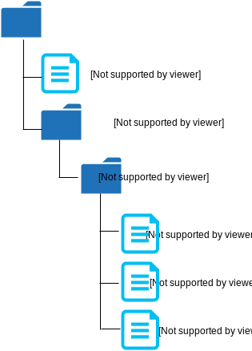
fib.js
"use strict";
function fib(n) { ... }
module.exports = fib;
fact.js
"use strict";
function fact(n) { ... }
module.exports = fact;
index.js
"use strict";
module.exports = {
fib: require("./fib"),
fact: require("./fact")
}
ejemplo.js
"use strict";
var math = require("math");
console.log(`fib(6) = ${math.fib(6)}`);
console.log(`fact(6) = ${math.fact(6)}`); Resultado:
$ node ejemplo.js
fib(6) = 8
fact(6) = 720
Aplicaciones del sistema de paquetes
Compartición de paquetes entre proyectos:
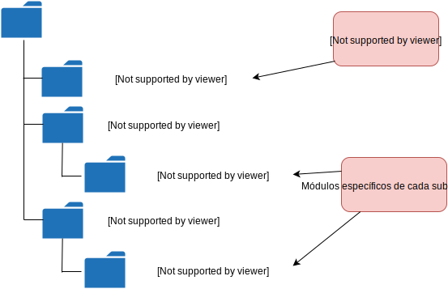Convivencia de distintas versiones de un mismo paquete:
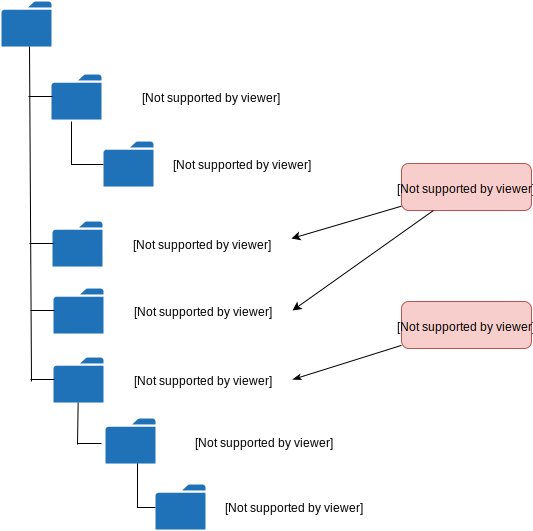Árbol de dependencias
A menudo, la implementación de un proyecto Node requiere la instalación de unos determinados paquetes.
Cada uno de estos últimos pueden requerir la instalación de otros paquetes que, a su vez, requieren de otros paquetes.
Cuando la presencia del paquete X es un requisito para el funcionamiento del paquete Y, decimos que Y depende de X.
La relación de dependencia entre paquetes es transitiva, de modo que se tiene un árbol de dependencias.
Ejemplo
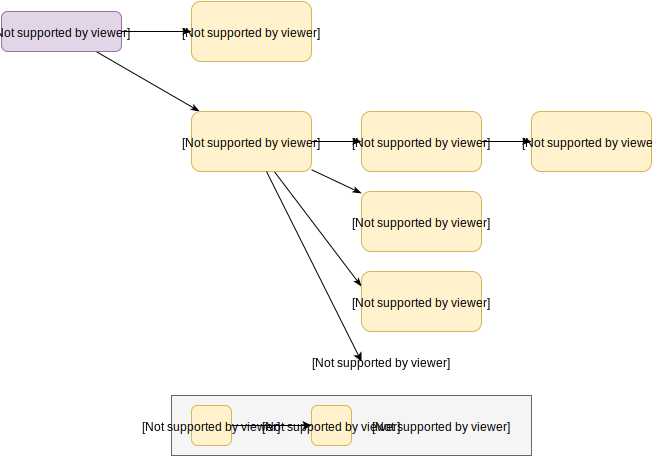Instalar dependencias con npm
La herramienta npm permite gestionar las dependencias de un proyecto. De hecho, npm fue inicialmente concebido como un instalador de paquetes.
Esta herramienta puede descargar paquetes desde un depósito de paquetes, e incorporarlos en nuestro proyecto. http://foo.com
Para descargar e instalar un paquete en un proyecto, ejecutar lo siguiente desde el directorio raíz del mismo.
# npm install nombre_paquete
Por ejemplo, para incorporar el paquete underscore en nuestro proyecto:
# npm install underscore
Descargará la versión más reciente del paquete desde el depósito npm y lo instalará bajo la carpeta node_modules del proyecto (creándola si es necesario)
El comando npm install no solo instala el paquete especificado, sino también sus dependencias.
Por ejemplo al instalar express:
# npm install express
Se instala el paquete express y todo su árbol de dependencias bajo la carpeta node_modules:
node_modules
├── express
├── accepts
├── array-flatten
├── content-disposition
├── content-type
├── cookie
...
Incluir dependencias en package.json
El fichero package.json de un proyecto permite especificar las dependencias del mismo mediante la propiedad dependencies:
{
"name": "mi_proyecto",
"version": "1.0.0",
"description": "Prueba de uso de paquetes",
"main": "main.js",
"scripts": {
"test": "echo \"Error: no test specified\" && exit 1"
},
"author": "Manuel Montenegro",
"license": "ISC",
"dependencies": {
"underscore": "^1.8.3",
"express": "^4.14.0"
},
"private": true
}
Por defecto, npm no modifica el fichero package.json tras añadir un paquete a nuestro proyecto.
No obstante, al instalar un paquete podemos indicar a npm que añada la dependencia correspondiente a package.json. Esto se hace mediante la opción --save.
# npm install underscore --save
# npm install express --save
Instalación global de paquetes
Es posible instalar los paquetes en el directorio de Node, en lugar del directorio del proyecto. Los paquetes instalados allí estarán disponibles para todos los proyectos.
Esto resulta útil cuando un paquete incorpora ficheros ejecutables para ser utilizados en cualquier proyecto del sistema (grunt, jshint, etc.)
Los paquetes globales se instalan en ${prefix}/lib/node_modules, donde ${prefix} representa el directorio de instalación de Node. La instalación puede requerir derechos de administrador.
Para instalar un paquete de manera global, se ha de especificar la opción -g a npm.
Por ejemplo:
# npm install -g jshint
Además del paquete correspondiente, instalará el ejecutable jshint en la carpeta ${prefix}/bin.
Distribución de un proyecto
Cuando se quiere distribuir un proyecto o publicar en un repositorio (p.ej. GitHub), no es necesario incluir las dependencias obtenidas mediante npm.
Basta con indicar las dependencias en el package.json, y distribuir este último junto con el proyecto.
Mediante el comando:
# npm install
se reconstruirá la carpeta node_modules a partir de la información contenida en package.json, descargando los paquetes que sean necesarios.
Otras opciones de npm
-
npm ls
Muestra el árbol de dependencias del proyecto actual. -
npm search term
Busca los paquetes del repositorio node cuyo nombre contengaterm. -
npm update nombre_paquete
Actualiza un paquete a la útima versión disponible. -
npm dedupe
Reorganiza la carpetanode_modulespara evitar duplicidades. -
npm publish
Sube el proyecto actual al npm registy.
Ejemplo: listar árbol de dependencias
# npm ls
mimodulo@1.0.0
├─┬ express@4.14.0
│ ├─┬ accepts@1.3.3
│ │ ├─┬ mime-types@2.1.12
│ │ │ └── mime-db@1.24.0
│ │ └── negotiator@0.6.1
│ ├── array-flatten@1.1.1
│ ├── content-disposition@0.5.1
│ ├── content-type@1.0.2
│ ├── cookie@0.3.1
│ ├── cookie-signature@1.0.6
│ ├─┬ debug@2.2.0
│ │ └── ms@0.7.1
│ ├── depd@1.1.0
│ ├── encodeurl@1.0.1
│ ├── escape-html@1.0.3
│ ...
└── underscore@1.8.3
Números de versión
Los paquetes y programas escritos en Node utilizan el convenio semantic versioning para numerar las versiones.
Más información: http://semver.org/
Una versión se identifica mediante tres números:
Al liberar una nueva versión:
- MAJOR: Se aumenta si los cambios introducidos rompen la compatibilidad con versiones anteriores.
- MINOR: Se aumenta si los cambios introducidos no rompen la compatibilidad con versiones anteriores, pero añaden nueva funcionalidad.
- PATCH: Se aumenta si no hay funcionalidad nueva, pero sí correcciones de bugs.
Excepción: versiones 0.x.x, cuya API es inestable.
Rangos de versión en package.json
¿Qué significa el símbolo ^ en el número de versión?
{
...
"dependencies": {
"underscore": "^1.8.3",
"express": "^4.14.0"
},
"private": true
}
En el caso de underscore significa que se admite otra versión distinta de la especificada, siempre que preserve la compatibilidad de la API (es decir, versiones 1.x.x).
Lo mismo se aplica a express.
Posibles especificaciones:
1.8.3La versión debe ser exactamente la especificada.>=1.8.3Se admite cualquier versión mayor o igual.<=1.8.3Se admite cualquier versión menor o igual.~1.8.3Se admiten versiones 1.8.x.^1.8.3Se admiten versiones 1.x.x.*Se admite cualquier versión.1.8.3 - 2.5.1Rango permitido.
Modelo asíncrono
Node utiliza un modelo de entradas y salidas asíncronas con el fin de permitir el desarrollo de aplicaciones altamente concurrentes.
Este modelo resulta muy útil en un contexto de aplicaciones web, donde un servidor web ha de procesar miles de peticiones por segundo.
Modelos síncrono vs asíncrono
Cuando ejecutamos una operación síncrona, la ejecución del programa se detiene hasta que dicha operación haya terminado.
Ej: Lectura de fichero síncrona
Cuando ejecutamos una operación asíncrona, la ejecución del programa continúa, mientras la operación se realiza de manera concurrente.
Ej: Lectura de fichero asíncrona
Un ejemplo: lectura de fichero
El módulo core fs proporciona operaciones para manejar ficheros.
Dentro de este módulo hay una función para obtener el contenido de un fichero, pero esta función tiene dos variantes:
readFileSync(fichero, opcs)
Lectura síncrona.readFile(fichero, opcs, callback)
Lectura asíncrona.
Lectura síncrona
"use strict";
var fs = require("fs");
try {
var contenido = fs.readFileSync("FichTexto.txt",
{ encoding: "utf-8" });
console.log("Fichero leído correctamente:");
console.log(contenido);
} catch (err) {
console.log("Se ha producido un error:");
console.log(err.message);
}
Las operaciones de lectura síncrona:
- Bloquean la ejecución del programa mientras se realizan.
- Devuelven el resultado de la operación.
- En caso de error, lanzan excepciones.
Lectura asíncrona
Si la operación de lectura asíncrona se realiza de manera ajena al hilo de ejecución principal del programa, ¿cómo sabemos cuándo ha finalizado?
Mediante el uso de funciones callback.
Funciones callback
Una función callback es una función definida por el programador, pero que no está pensada para ser llamada directamente por este, sino por otro componente del sistema.
Funciones callback: readFile
La función readFile, además de recibir el nombre del fichero y las opciones de lectura, recibe un tercer parámetro, que es una función.
Esta función será definida por el programador.
Sin embargo, será llamada por readFile.
Es, por tanto, una función callback.
La función callback recibe dos parámetros:
- Un objeto de la clase
Error, en el caso en que la lectura haya fallado.
Si no ha fallado, toma el valornull. - El contenido del fichero leído, en el caso en que se haya leído correctamente.
Si ha fallado, toma el valorundefined.
"use strict";
var fs = require("fs");
fs.readFile("FichTexto.txt", { encoding:"utf-8" }, ficheroLeido);
// Función callback
function ficheroLeido(err, contenido) {
if (err) {
console.log("Se ha producido un error:");
console.log(err.message);
} else {
console.log("Fichero leído correctamente:");
console.log(contenido);
}
}
Tras la lectura, readFile llamará a la función ficheroLeido.
Las funciones callback suelen definirse directamente como funciones anónimas en la llamada a readFile.
"use strict";
var fs = require("fs");
fs.readFile("FichTexto.txt",
{ encoding: "utf-8" },
function(err, contenido) {
if (err) {
console.log("Se ha producido un error:");
console.log(err.message);
} else {
console.log("Fichero leído correctamente:");
console.log(contenido);
}
}
);
Las operaciones de lectura síncrona:
- No bloquean la ejecución del programa.
Porque se ejecutan de manera concurrente. - No devuelven el resultado de la operación.
El resultado de la lectura se pasa como parámetro a la función callback. - No lanzan excepciones.
En caso de error, es la función callback quien recibe la excepción como primer parámetro.
Error frecuente
¡Cuidado con el siguiente código!
var contenidoFichero;
fs.readFile("FichTexto.txt",
{ encoding: "utf-8" },
function(err, contenido) {
if (!err) {
// Asignamos el contenido a la variable
// externa
contenidoFichero = contenido;
}
});
console.log(contenidoFichero); // ¿Qué se imprime aquí?
En el mejor de los casos, la última línea se ejecutaría después de que la lectura haya finalizado.
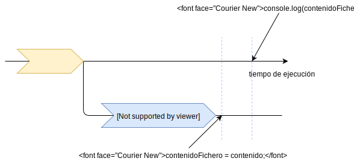Pero también podría ejecutarse antes de que la lectura termine:
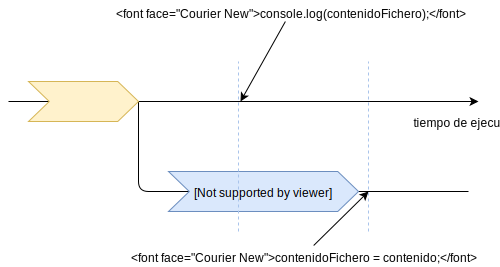En este caso se imprimiría undefined, ya que contenidoFichero no habría sido inicializada en el momento de ejecutar console.log.
Si un fragmento del programa depende del resultado de una llamada asíncrona, no debe ir tras dicha llamada:
fs.readFile("fich.txt", function(err, contenido) {
...
});
// hacer algo con el contenido
fs.readFile("fich.txt", function(err, contenido) {
// hacer algo con el contenido
...
});
¿Por qué un modelo asíncrono?
Node está pensado para aplicaciones con una alta capacidad de respuesta como, por ejemplo, servidores web.
La funcionalidad de la mayoría de aplicaciones web está basada en accesos a disco, u otra fuente de datos (p.ej. bases de datos), operaciones relativamente lentas.
Para que un servidor web pueda atender a varios clientes, ha de gestionar adecuadamente estas operaciones de entrada y salida.
Modelos de servidores web
- Modelo tradicional: un proceso por petición.
- Modelo tradicional: pool de hebras de ejecución.
- NGINX Process Model (Node).
Un proceso por petición
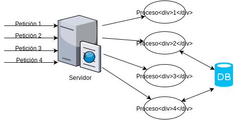Se crea un proceso del sistema operativo por cada petición que se realice.
Inconveniente: coste de la creación de procesos.
Pool de hebras de ejecución
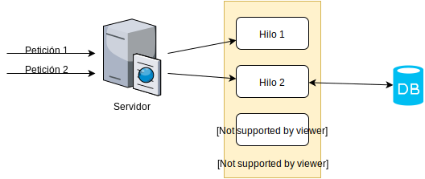Al arrancar el servidor se crea un conjunto de hebras, inicialmente sin tarea asignada.
Cuando llega una petición al servidor, una de las hebras se encarga de atenderla.
Con esto nos ahorramos el coste de creación y liberación de hebras a medida que van llegando peticiones.
Inconveniente: el cambio del contexto de ejecución entre hebras conlleva un coste.
Modelo NGINX / Node

Existe un único hilo en ejecución
Este hilo se encarga de atender a todas las peticiones.
Cuando se requiere realizar una operación con coste elevado en tiempo (acceso a disco, BD, red, etc.), se realiza en una «hebra» distinta.
Estas hebras son gestionadas por Node, no por el SO.
⇒ El cambio de contexto entre hebras es menos costoso.
Bucle principal de un servidor Node
while (!terminado) {
1. Esperar petición de un cliente.
2. Procesar petición.
}
¿Cómo se procesa la petición?
Si sólo se utilizan operaciones síncronas, el servidor no acepta otra petición hasta que la hayan terminado dichas operaciones:
while (!terminado) {
1. Esperar petición de un cliente.
2. Procesar petición:
2.1 var resultado = consultarBDSync(...);
2.2 Procesar resultado
2.3 Devolver resultado al cliente.
}
Por el contrario, si se realizan operaciones asíncronas, será la función callback (que se ejecuta concurrentemente) la que procesa y devuelve el resultado de la operación.
while (!terminado) {
1. Esperar petición de un cliente.
2. Procesar petición:
2.1 var resultado = consultarBDASync(..., callback);
}
function callback(resultado) {
1. Procesar resultado
2. Devolver resultado al servidor
}
Nada más lanzar la operación consultarDBAsync, el servidor está listo para atender otra petición.
Consecuencias de este modelo
En el contexto de un servidor web con Node, todas las operaciones de E/S deben ser asíncronas, para evitar cuellos de botella en el procesamiento de las peticiones.
Esto también se aplica cuando se realicen operaciones que utilicen la CPU intensivamente.
while (!terminado) {
1. Esperar petición de un cliente.
2. Procesar petición (alto coste CPU). Cuello de botella
3. Devolver respuesta.
}
Si se desea realizar una operación de este tipo, el cómputo complejo deberá dividirse en cómputos más sencillos, y ejecutar cada uno de ellos en una iteración del bucle de node, de manera que se intercalen con el procesamiento de las demás peticiones al servidor.
Esto se puede realizar con la función process.nextTick()
Más información
Módulos y paquetes Node
- Variables y funciones predefinidas
- Módulos core:
- Nombres de ficheros:
path - Manejo de ficheros:
fs - Eventos
- Streams
- Sistema operativo:
os - Utilidades varias:
util
- Nombres de ficheros:
-
Otras librerías:
underscore,moment.
Variables predefinidas
Las siguientes variables son accesibles desde cualquier módulo o script, pero no desde la shell de Node:
__filename: Fichero .js que se está ejecutando (incl. directorio).__dirname: Directorio en el que se encuentra el fichero que se está ejecutando.
// globals.js
// ----------
console.log(__dirname);
// → /home/manuel/AW/core-modules/
console.log(__filename);
// → /home/manuel/AW/core-modules/globals.js
La variable process
Atributos relacionados con la ejecución del programa:
process.exit(code)
Finaliza la ejecución del programa.process.argv
Array con los argumentos de la línea de comandos.process.cwd()/process.chdir(dir)
Obtiene o cambia el directorio actual.-
process.platform,process.version,process.archInformación sobre el sistema operativo, versión de Node, etc.
Ejemplo
// Los dos primeros elementos de process.argv son el
// nombre del ejecutable de Node, y el nombre del script
var args = process.argv;
var suma;
if (args.length === 4) {
suma = Number(args[2]) + Number(args[3]);
} else {
suma = "No definida";
}
console.log(`Suma: ${suma}`);
console.log(`Sistema operativo: ${process.platform}`);
console.log(`Versión de node: ${process.version}`);
console.log(`Arquitectura: ${process.arch}`);
# node process.js 5 6
Suma: 11
Sistema operativo: linux
Versión de node: v4.6.1
Arquitectura: x64
setTimeout(fun, time)
Ejecuta la función fun transcurrida una cantidad de milisegundos dada.
La función se ejecuta asíncronamente.
setTimeout(function() {
console.log("Han pasado 5 segundos");
}, 5000);
console.log("Esto se ejecuta antes");
Esto se ejecuta antes
Han pasado 5 segundos
Similarmente: setInterval, clearInterval, que
ejecutan la función dada periódicamente.
var contador = 1;
// El objeto devuelto por setInterval nos sirve
// para detener el temporizador cuando el contador llegue a 5
var interval = setInterval(function() {
console.log(`Ejecutándose por ${contador}ª vez`);
if (contador === 5) {
clearInterval(interval);
}
contador++;
}, 1000);
Más información https://nodejs.org/docs/v4.6.1/api/timers.html
Módulo path
Contiene funciones de utilidad para trabajar con nombres de ficheros de manera independiente del SO.
Funciones más importantes:
path.parse(filename)
Obtiene las distintas componentes (path, fichero, extensión, etc.)path.join(dir1, dir2, ...)Concatena varios directorios utilizando el separador del sistema operativo:/en sistemas UNIX (Linux),\en Windows.
var path = require("path");
var infoFichero = path.parse(__filename);
console.log(infoFichero);
// → { root: '/',
// dir: '/home/manuel/AW/core-modules',
// base: 'paths.js',
// ext: '.js',
// name: 'paths' }
var nuevoFichero = path.join(infoFichero.dir, "nuevo",
infoFichero.base);
console.log(nuevoFichero);
// → /home/manuel/AW/core-modules/nuevo/paths.js
Más información: https://nodejs.org/docs/v4.6.1/api/path.html
Módulo fs
Funciones relacionadas con el sistema de ficheros.
-
readFile(fichero, options, callback)
Lectura asíncrona de un fichero.La función callback recibe como primer parámetro un objeto
Error(si se produce error) y como segundo parámetro el contenido del fichero. -
writeFile(fichero, datos, options, callback)
Escritura asíncrona de un fichero.
La función callback recibe como primer parámetro un objetoError(si se produce error).
var fs = require("fs");
var texto = "Nadi puede ser dichoso,\n" +
"señora, ni desdichado,\n" +
"sino que os haya mirado";
fs.writeFile("Poema.txt", texto, {encoding: "utf-8"},
function(err) {
if (err) {
console.log("Error al escribir el fichero.");
} else {
console.log("Fichero escrito correctamente.");
fs.readFile("Poema.txt", {encoding: "utf-8"},
function(err, contenido) {
if (!err) {
console.log(contenido);
}
});
}
});
Si no se indica la opción encoding, estas funciones trabajan con objetos de tipo Buffer, en lugar de cadenas. Un buffer representa una secuencia de bytes.
Esto sirve para trabajar con ficheros binarios.
var fs = require("fs");
fs.readFile("thymeleaf.pdf", function(err, buffer) {
// Obtenemos los cuatro primeros bytes
var mark = buffer.slice(0, 4);
// Y los imprimimos con la codificación ASCII
console.log(mark.toString("ascii"));
});
Otras funciones de fs
- Leer y escribir de manera segmentada:
open,close,read,write. -
Manejo del sistema de ficheros:
mkdir,fstat,rename,unlink, etc.
Variantes síncronas
Son bloqueantes y (posiblemente) devuelven un resultado, en lugar de utilizar funciones callback.
readFileSync,writeFileSyncopenSync,closeSync,readSync,writeSync.mkdirSync,fstatSync,renameSync, etc.
Módulo os
Contiene utilidades relacionadas con el sistema operativo. Entre ellas:
homedir()
Devuelve el path del directorio de usuario.tmpdir()
Devuelve el path de un directorio para crear ficheros temporales.
var os = require("os");
console.log(os.homedir()); // → /home/manuel
console.log(os.tmpdir()); // → /tmp